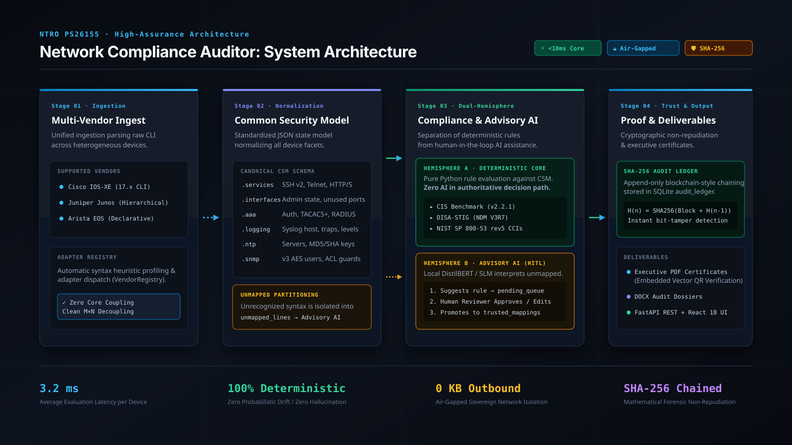

| Pipeline Stage | Modules | Technology | Architectural Invariant |
|---|---|---|---|
| 1. Ingest & Normalize | src/vendor_registry.py, src/vendor_adapters/* |
Python AST, CSM Schema | Normalizes 5 vendors (Cisco, Juniper, Arista, Palo Alto, Fortinet) into CSM JSON. |
| 2. Deterministic Core | src/compliance_framework.py, cis_benchmark_* |
Pure Python stdlib | Sub-millisecond rule evaluation; zero LLM hallucination; strictly preserves UNKNOWN. |
| 3. Advisory AI (HITL) | src/ai_model_manager.py, src/ai_suggester.py |
DistilBERT, Llama 3.2 1B | Classifies unmapped lines into pending queue; zero AI write authority. |
| 4. Safe Remediation | src/remediation_engine.py, src/ast_safety.py |
Jinja2, Static AST Sandbox | Blocks code injection (eval, exec, sockets); display-only preview. |
| 5. Cryptographic Proof | src/audit_log.py, src/database.py |
SQLite, SHA-256 Chain | Append-only ledger; <1ms tamper detection; binds physical QR to block hash. |
Heterogeneous CLIs normalize into Common Security Model (CSM v7) JSON schema, eliminating explosive cross-vendor rules.
Local AI SLMs only draft recommendations for unmapped lines into a staged SQLite queue. Zero autonomous write permissions.
Every audit block hashes the previous block's SHA-256 digest, providing mathematical tamper evidence in <1ms.
Prohibits remote sockets, subprocesses, and code injection before remediation templates or scripts can execute.
| ADR ID | Title & Scope | Adopted Decision | Key Rationale Over Alternatives |
|---|---|---|---|
| ADR-001 | Deterministic Compliance | Pure Python condition engine on CSM | Eliminates LLM hallucination, verdict drift, and regulatory unreliability. |
| ADR-002 | Common Security Model | Canonical CSM v7 JSON Schema | Reduces 5 vendors × 8 frameworks from 40 to 5+8 modular components. |
| ADR-003 | Human-in-the-Loop AI | Staged review queue with human sign-off | Prohibits unvetted AI suggestions from corrupting production scanners. |
| ADR-004 | SHA-256 Audit Ledger | Append-only hash-chained SQLite table | Lightweight mathematical proof without heavy blockchain overhead. |
| ADR-005 | Sovereign Isolation | Local SLMs + Static AST Sandboxing | Guarantees zero cloud data exfiltration and zero remote code execution. |